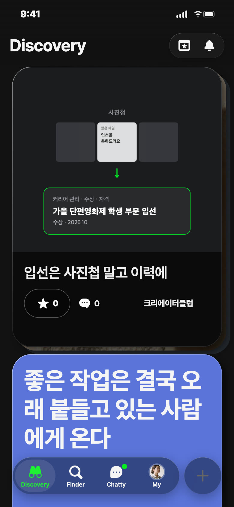
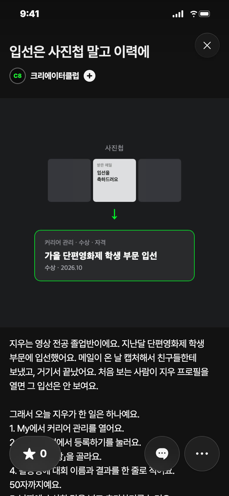

C8 앱 게시 시안 · 11/5 — 한 사람 따라 하는 설명서 1편 · 포트폴리오
오늘 추천 · 포트폴리오


칸: 앱 소개 × 쓸모 · 연재 1편
왜 지금: 가을 공모전·영화제 결과가 나오는 철이라 캡처만 해 둔 사람이 많아요
보낼 사람: 상 받고 프로필엔 안 적은 친구에게 「너 그 입선 여기 넣어」
받고 싶은 댓글: 「2년 전 장려상, 캡처만 있던 거 방금 넣었어요」
사진 2장: 1 커버(사진첩 → 이력 한 줄) · 2 수상 · 자격 추가 화면을 채운 모습
제목
입선은 사진첩 말고 이력에
설명
지우는 영상 전공 졸업반이에요. 지난달 단편영화제 학생 부문에 입선했어요. 메일이 온 날 캡처해서 친구들한테 보냈고, 거기서 끝났어요. 처음 보는 사람이 지우 프로필을 열면 그 입선은 안 보여요. 그래서 오늘 지우가 한 일은 하나예요. 1. My에서 커리어 관리를 열어요. 2. 수상 · 자격에서 등록하기를 눌러요. 3. 유형은 「수상」을 골라요. 4. 활동명에 대회 이름과 결과를 한 줄로 적어요. 50자까지예요. 5. 날짜에 수상한 달을 넣고 추가하기를 눌러요. 활동명은 「입선」만 쓰지 말고 대회 이름까지 써요. 섭외하려는 사람이 그 이름으로 어떤 대회였는지 찾아볼 수 있어요. 상만 들어가는 칸도 아니에요. 교육 수료, 협회 가입, 자격증, 라이센스도 같은 자리에 들어가요. 사진첩에 캡처만 있는 수료증이 있다면 그것도 옮길 수 있어요. 지우가 오늘 옮긴 건 입선 한 줄이에요. 사진첩에 같은 캡처가 있다면 하나만 골라 옮겨 둬요. 지우와 영화제 이름은 C8이 지어낸 거예요. #지우따라하기 #커리어관리